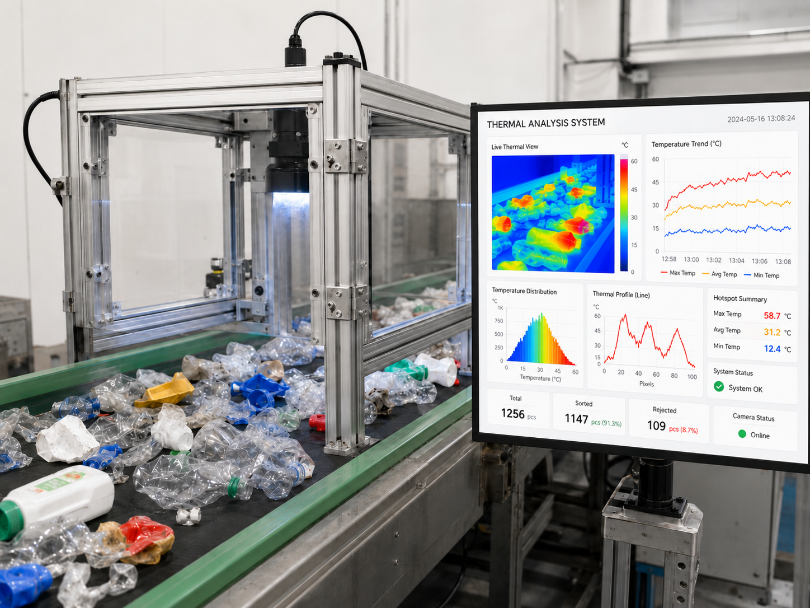

초분광·열화상 센서로 폐플라스틱 등 폐자원의 재질 성분을 실시간으로 분석해 소재별 자동 선별을 지원합니다. 선별 정확도를 높이고 수작업 의존도를 낮춰, 재활용률 향상과 자원순환 공정 전반의 효율·경제성을 개선합니다.

초분광(hyperspectral)과 가시광 센서를 융합해 폐플라스틱의 재질 성분을 진단하는 원천기술(TRL 6, 2024~25)을 시작으로, AI 선별 알고리즘을 고도화(TRL 7, 2026 목표)해 폐배터리 해체·재활용 필드 실험까지 적용 범위를 넓히고, 2027년에는 다중 스펙트럼 자율지능형 AI 선별시스템으로 발전시키는 로드맵을 갖고 있습니다. 시스템은 가시광·열화상 센서와 고정 장치·조명·촬영각도 조절 구조로 구성됩니다.
고객은 기존 폐플라스틱 선별 장비 제조사(B2B) — 초분광 전용 고비용 시스템 대비 저렴한 대안을 필요로 하는 시장입니다. 파트너사 위드위(WithWe)와 함께 "폐플라스틱 분류 One-Stop 시스템"을 공동개발하며 TRL 6에서 7로의 스케일업을 진행하고 있습니다. 2026년에는 폐배터리 해체·재활용 분야로의 적용 확장을 실증할 예정입니다.